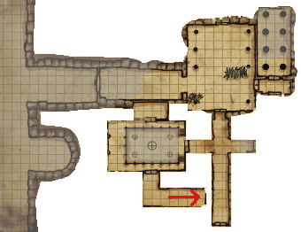
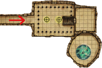

Week 28 - Mission accomplished!
3. The Hall of Poison Winds
This tall, temple-like chamber has a forty foot-high ceiling. Carved stone pillars
reach up to the ceiling in elegant lines, but
strange clusters of spikes stick up from the
floor in two distinct areas, like barricades.
Near the doors to the north, south, and
east stand carved stone images of tall,
elongated humanoid forms. A series of
small openings, each about one inch in
diameter, festoon the wall between these
forms. Beneath these openings are small
basins, each about the size of an apple.
Strange undulations make the doors and
nearby walls seem more like a curtain than
a level surface. Twisting runes wind over
the walls. The floor has channels carved
in it, as if to transport water, but nothing
flows there now.

Our heroes move into the next room. The portal ghoul is here, cowering away from the holy presence of Frith. The sixth Belker is also here, flailing away uselessly at the ghoul. The party step in and carve them up. Then they retreat out of the room cautiously while Jericho investigates.
Jericho searches the room, but initially fails to locate any traps. Stepping confidently ahead to deal with one of the doors, he discovers that it is indeed trapped.
Bas-Relief movie
When this vapor is created, it runs
up along and melds with the bas-reliefs
on the wall, generating a fluid image that
shows Icosiol at the battle of Pesh, fighting
twisted creatures of chaos. The last image is
rendered in some detail, and depicts Icosiol
forming an alliance with a powerful marut
inevitable. At the end of the display, the
gas fountains show Icosiol holding a large
square seal in one hand and a long rod or
staff in the other, as if to display them to
the viewer.
A thick misty gas seeps out of the holes in the wall, forming images of a Wind Duke in the cunningly crafted carvings on the wall and floor. This gas - perhaps intentionally, perhaps not - is poisonous, but Jerocho avoids any ill effects. Having seen one trap, he easily notes the location of the other two and sets about disabling them.
At around about this time, the south door opens, and standing in the door is seven-foot high red lizard, sumptuously dressed in finest asbestos, wielding a spear and whose form radiates incredible heat. Behind him stands a huge-sized bonfire. "I say!", he exclaims, "What the devil is all this racket! And what business have you here? Explain yourselves!"
Flash. Beguiler. Natch.
Jericho scurries out of the way, and Flash steps forward and respectfully addresses the fiery gentleman in Ignan. The gentleman is Antyress Redpike, Earl of Coalchester, and is horribly, horribly bored. He takes quite a shine to Flash, who assures him that they are merely attempting to rescue an old friend who had stumbled into the complex.
The Earl is quite content to let them continue, on promise that they will not loot the tomb or damage it. He warns them: "Down from here there is a room surrounded by pillars. Do be careful. To the north is a red river, whose banks at the moment are infested with Xorns. Crude things of earth, you know, barely more than beasts. To the south is the private room of the last keeper, Zifforan. He has gone quite mad, you know, and managed to transform himself into a wraith of some kind. Immensely dangerous. Now if you don't mind, I'm finding this room a little chilly. Charming to meet you." And with that, he retires south and west to his room.
— † —
The party decide to investigate the other doors. The door to the north turns out to be a false door set into bare rock. The door to the west opens onto a short corridor with double doors to the north.
4. Collapsing Pillar Hall
This long hall contains a twin set of pillars, leading to a large set of doors at the
far end. These are columns made of large
marble blocks shaped like drums; not all
have aged quite the same, so their colors
vary from gray to white to tan.
Jericho investigates, opens the doors, and discovers that the floor beyond the door to the north is trapped! He calls for Flash (or Frith), who identifies only that there is some kind of divination magic at work.
Jericho decides to trust his reflexes, and advances into the room. As soon as he does, a pillar falls on him! Or tries to. He leaps out of the way … and another pillar falls on him! But again, he nimbly dodges. The party decide to ignore the room, and search elsewhere.
— † —
6. The Sword of Law
This intersection is lit by six flickering orange
and yellow lanterns that float around a central statue of grey stone. The statue shows
an androgynous Wind Duke wearing robes
that seem to be stirred by a breeze. The
figure may be a symbol of justice or war, for
it holds a glittering sword outstretched in
one hand and carries a balance in the other.
The statue is eight feet tall and stands on a
four-foot-tall pedastal.
They head south, to a four-way intersection. In the center of the intersection is a magnificent statue, but the elect not to touch it, as they promised the Earl. To their left is a door that radiates heat - no doubt the Earl's quarters. So they go right, to the west.
— † —
7. The Silent Gallery
This two-tiered hall shines with purple light
from four large chandeliers. A large black
sphere hangs between them. The chandeliers seem to be sculpted with small
humanoid figures in silvery metal. A second-floor gallery with arches and spiral-striped pillars runs the length of the hallway to a second set of large double doors.
The black tile floor absorbs the light from
the chandeliers, and even sound in this
chamber seems muted and dull.
The party check the second-floor gallery, avoiding the area under the chandeliers and the large black sphere. The door to the west is a fake.
8. The Courtesan’s
Tomb
This small but well-appointed room has
a delicately arched ceiling. The walls are
painted with garden scenes featuring two
Wind Duke lovers, and the center of the
room contains a large urn with a dark red
glaze and gold decorations. Six small boxes,
each carved of some black substance bound
with corroded metal, line the back wall.
Chairs sit in each corner.
Behind the door to the north is a small room. The party see the large urn and get totally paranoid, and elect to leave the room absolutely alone.
— † —
The south door leads to a passage sloping downward. Jericho elects to search the southern arm of the four-way intersection and the door at the south before continuing. While he does so, he is attacked! An enormous spider phases in out of nowhere and paralyses him. One of the party was watching, and raises an alarm, but as the party comes to assist, they step on and trigger a trap n the corridor, that they had by sheer luck avoided earlier. The trap is a word of law, and both Jericho and the spider are paralyzed. So the party simply dismember the spider, and Frith casts Remove Paralysis on Jericho. The sothern door is another fake, so the party return to the Silent Gallery and venture south down the sloping corridor.
So much for flycatcher. There is a bit of a subplot involving him, but the party will never know.
— † —
9. The Shadow Web
This rectangular room has small columns
around the edges that partially hide the
carvings along the walls. Pale white light
glows from two large wheel-shaped chandeliers, casting overlapping shadows
throughout the room. Blue metal double
doors stand at the top of a flight of stairs
opposite the main entrance, guarded by
two warrior figures with raised double
swords, as well as a single doorway to the
south and double doors to the north, also
guarded by warrior statues.
13. The Wind Duke’s
Antechamber
A small statue of an armored Wind Duke,
his left hand resting on a sword, his right
held up to shield his eyes, stands at the far
wall of this room as part of a small shrine.
The statue seems to be made of gold, with
sparkling blue gems for eyes; a beam of
bright light shines onto the statue from
above. The walls are carved with bas-reliefs
of Wind Duke servants bowing and soldiers saluting. An elaborate carpet covers
the floor, but it is badly worn and the colors have faded—only small patches of the
complete pattern remain.

The party recognise room at the end of the passage as the room that the Earl spoke of. Ignoring the doors to the north and south, they head up the stairs to the west. Here is a smaller room, featuring a gold statue. The party decide that here is a good enough spot to rest - if they don't interfere with the statur. But first, Jericho decides to check what's behind the door to the south.
14. The Tempest Globe
This room is full of flickering bluish light
and a breeze that smells like thunderstorms. The floor slopes down toward the
center from all directions, like a funnel. At
the bottom crackles a sparkling globe of
lightning. A metallic spike protruding down
from a stone block in the ceiling touches
the very tip of the globe’s upper curve.
Inside the globe floats a human figure, a
man with a long dark beard wearing torn
and stained red robes.
Bloody hell! They have found Allustan! He seems to be trapped in some sort of temporal stasis. The party decide to rest and regain spells - Allustan doesn't seem to be going anywhere - and to deal with whatever it is in the morning.
In the morning, Flash casts a Dispell Magic on the globe. The globe flickers out, and Allustan slumps to the floor - gravely injured and bleeding out. Gauthakan runs into the room and retrieves him before the globe can reappear, and Frith heals him.
The party were damn lucky - their Dispell Magic suppressed the globe for the maximum time. Any less lucky, and the lightning generator would have restarted and Allustan would have been toast.
Allustan immediately asks about the dragon, and they party and he exchange stories. It seems he simply wandered into the tomb and avoided the traps by combination of sheer luck and not touching anything. He tells the party:
“This place is important.
A powerful general is entombed here,
and a lot of powerful magic is entombed
with him. The Wind Dukes had a habit
of burying their weapons with their dead
in the months after the their victory over
Chaos. Not to honor the dead as much
as to store these weapons in a safe place,
so that should Chaos rise again, the
weapons would be available to them. I
believe that something powerful indeed
is hidden somewhere in this tomb, and
I believe it can help us in the dark times
that face us today.”
As to the trap in the next room, Allustan suggests that they simply deal with the iron spike hanging off the bottom of the generator o the ceiling.
Gauthakan, lacking suitable missiles, elects to rip the door off its hinges. Oh no! And he party were warned not to damage the fittings! A pair of golems emerge from the reliefs around the room, and attack Gauthakan. They are immune to magic, but Allustan casts Stoneskin on Gauthakan, on whom the golems focus their attacks. The golems are eventually defeated, and Gauthakan flings chunks of the resulting debirs at the lightning generator until the iron spkike at the base is broken.
Well! Will that party take Allustan's advice and loot the tomb for weapons? Oooh, I rather suspect they will. But what even worse dangers lie in store, deeper in the tomb?
— † —